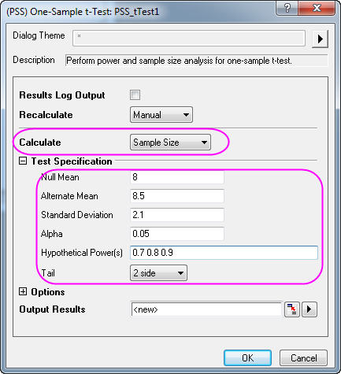
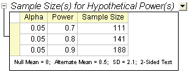
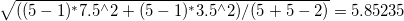
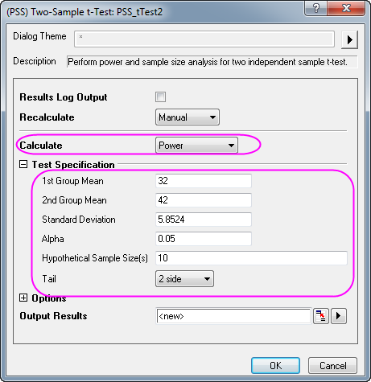
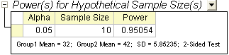
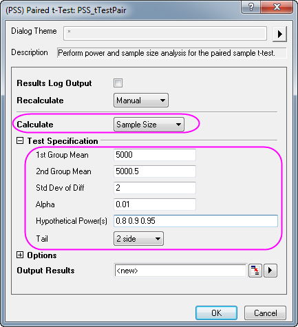
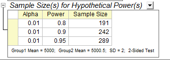
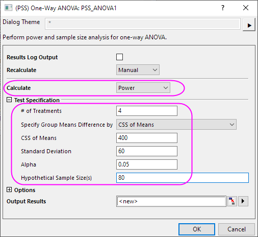
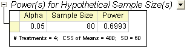

Trennschärfe und Stichprobenumfang
Power-SampleSize
Zusammenfassung
Die Analyse von Trennschärfe und Stichprobenumfang ist nützlich in der Versuchsplanung. Unzureichende Daten bedeuten eine zu geringe Trennschärfe, um eine falsche Nullhypothese zurückzuweisen, und das Sammeln von zu vielen Daten ist eine Verschwendung von Zeit und Ressourcen. Daher ist es grundsätzlich wichtig, die Anforderungen an den Stichprobenumfang vor dem Durchführen eines Experiments zu bestimmen. Die Trennschärfe des Experiments kann für einen gegebenen Stichprobenumfang berechnet werden. Genauso können erforderliche Stichprobenumfänge für gegebene Trennschärfewerte berechnet werden.
Was Sie lernen werden
Dieses Tutorial zeigt Ihnen, wie Sie den Wert eines Stichprobenumfangs oder der geschätzten Trennschärfe berechnen, um Experimente mit Hilfe verschiedener praktische Beispiele zu entwerfen.
t-Test bei einer Stichprobe
Hintergrund:
Ein Soziologe möchte bestimmen, ob die durchschnittliche Kindersterblichkeitsrate in den USA gleich 8 ist oder nicht. Im Versuchsaufbau kann die Differenz der Rate nicht mehr als 0,5 variieren. Es ist bereits aus der Pilotstudie bekannt, dass die Standardabweichung 2,1 betragen sollte.
Frage:
Wie groß wäre der Stichprobenumfang, um die durchschnittliche Kindersterblichkeitsrate bei einem Konfidenzniveau von 95 % ( = 0,05) für die Trennschärfewerte von 0,7, 0,8 und 0,9 zu schätzen?
= 0,05) für die Trennschärfewerte von 0,7, 0,8 und 0,9 zu schätzen?
Schritte in Origin:
- Aktivieren Sie ein leeres Arbeitsblatt und wählen Sie Statistik: Trennschärfe und Stichprobenumfang: t-Test bei einer Stichprobe.
- Wählen Sie im Dialog PSS_tTest1 die folgenden Einstellungen und klicken Sie auf OK.

Origin-Ausgabe:
Es wird ein Ergebnisblatt erzeugt, das den berechneten Stichprobenumfang für die hypothetischen Trennschärfen auflistet.

Ergebnisinterpretation:
Gemäß der Ergebnisse sollte der Soziologe für den Versuchsaufbau eine Umfrage von 111 Stichproben für einen Trennschärfewert von 0,7, 141 Stichproben für einen Trennschärfewert von 0,8 und 188 Stichproben für einen Trennschärfewert von 0,9 durchführen.
t-Test bei zwei Stichproben
Hintergrund:
Eine Arztpraxis arbeitet mit zwei örtlichen Krankenkassen zusammen, Healthwise und Medcare. Es soll der Mittelwert des Zeitraums (in Tagen) verglichen werden, den die beiden Kassen für das Durchführen von Rückerstattungen benötigen. Historische Daten zeigen, dass der durchschnittliche Wert von Healthwise bei 32 Tagen liegt und die Standardabweichung 7,5 Tage beträgt. Der durchschnittliche Rückerstattungszeitraum für Medcare liegt bei 42 Tagen, und die Standardabweichung beträgt 3,5 Tage.
Frage:
Wenn 10 Forderungen an jede Kasse ausgewählt und die entsprechenden Rückerstattungszeiträume erfasst werden, welche Trennschärfe ist notwendig, um die Differenz der Mittelwerte der Rückerstattungszeiten zwischen den 2 Krankenkassen mit 5 % oder mehr zu erkennen?
Schritte in Origin:
- Berechnen Sie die gepoolte Standardabweichung als:
- 
*Beachten Sie, dass dieser Wert später als Standardabweichung für die Berechnung der Trennschärfe verwendet wird.
- Die Stichprobengröße der ersten Gruppe und zweiten Gruppe sollte 10 betragen (20 Stichproben insgesamt).
- Aktivieren Sie ein leeres Arbeitsblatt und wählen Sie Statistik: Trennschärfe und Stichprobenumfang: t-Test bei zwei Stichproben.
- Wählen Sie im Dialog PSS_tTest2 die folgenden Einstellungen und klicken Sie auf OK.

Origin-Ausgabe:
Es wird ein Ergebnisblatt erstellt, das die berechnete Trennschärfe zeigt.

Ergebnisinterpretation:
Dem Ergebnis nach können wir schlussfolgern, dass die Arztpraxis mit einer Wahrscheinlichkeit von 0,95054:1 (oder 95 %) eine Differenz erkennen kann, wenn 10 Forderungen für jede Krankenkasse gesammelt werden. Die Wahrscheinlichkeit, dass Sie die Nullhypothese fälschlicherweise nicht verwerfen und schlussfolgern, dass die zwei Mittelwerte nicht unterschiedlich sind, liegt bei 4,946% (1 - 0,95054).
t-Test bei verbundenen Stichproben
Hintergrund:
Zwei Maschinen des gleichen Typs werden verwendet, um die Dicke einer Dünnschicht aus amorphen Silizium (a-Si) zu messen. Um zu bestimmen, ob es eine Differenz in den zwei Maschinenmessungen gibt, plant ein Ingenieur eine Untersuchung, um die Tiefenmessungen der beiden Maschinen zu vergleichen.
Bei einer vorhergehenden Untersuchung zur Dicke einer a-Si-Dünnschicht wurde die Standardabweichung der Differenz bei 2 µm liegend festgestellt. Außerdem ist bekannt, dass die Differenz der Messung durch die zwei Maschinen 0,5 µm nicht überschreiten sollte. Die durchschnittliche Dicke, die von Maschine 1 gemessen wurde, liegt bei 5000 µm.
Frage:
Wie viele Stichproben müssen bei einem Konfidenzniveau von 99 % für die Trennschärfewerte von 0,8, 0,9, 0,95 verwendet werden?
Schritte in Origin:
Gemäß der obenstehenden Informationen wird geschlussfolgert, dass der Mittelwert der ersten Gruppe bei 5000 µm liegt und der Mittelwert der zweiten Gruppe bei 5000,5 µm.
- Aktivieren Sie ein leeres Arbeitsblatt und wählen Sie Statistik: Trennschärfe und Stichprobenumfang: t-Test bei verbundenen Stichproben.
- Wählen Sie im Dialog PSS_tTestPair die Einstellungen im folgenden Bild und klicken Sie auf OK.

Origin-Ausgabe:
Es wird ein Ergebnisblatt erzeugt, das den erforderlichen Stichprobenumfang für die verschiedenen Trennschärfewerte auflistet.

Ergebnisinterpretation:
Wir können schlussfolgern, dass der Ingenieur mit einer Wahrscheinlichkeit von 80 % eine Differenz erkennt, wenn 191 Stichproben der Dünnschicht von jeder Maschine gemessen werden. Bei 242 gemessenen Stichproben beträgt die Wahrscheinlichkeit 90 % und bei 289 gemessenen Stichproben der Dünnschicht 95 %.
Einfache ANOVA
Hintergrund:
Forscher möchten herausfinden, ob unterschiedliche Pflanzen einen unterschiedlichen Stickstoffgehalt haben. Sie planten, den Stickstoffgehalt in Milligramm von 4 Pflanzenarten (80 Beobachtungen pro Pflanzenart) zu erfassen. Die bisherige Forschung geht davon aus, dass die Quadratwurzel von MSE (Fehler des Mittelwerts der Quadrate) 60 und die CSS (korrigierte Summe der Quadrate) des Mittelwerts 400 sind.
Frage:
Ist der Plan durchführbar? (Das heißt, ist die berechnete Trennschärfe akzeptabel?)
Schritte in Origin:
- Der Stichprobenumfang für jede Gruppe ist 80.
- Aktivieren Sie ein leeres Arbeitsblatt und wählen Sie Statistik: Trennschärfe und Stichprobenumfang: Einfache ANOVA
- Wählen Sie im Dialog PSS_ANOVA1 die folgenden Einstellungen und klicken Sie auf OK.

Origin-Ausgabe:
Ein Ergebnisblatt wird erzeugt, und der Trennschärfewert wird basierend auf der bekannten Bedingung berechnet.

Ergebnisinterpretation:
Es sieht so aus, als wäre der ursprüngliche Versuchsplan mangelhaft. Die Wahrscheinlichkeit, eine Differenz in den Gruppen zu entdecken, liegt bei 69 %. Um verlässlichere Ergebnisse zu erhalten, müssen die Forscher mehr Stichproben von jeder Pflanzenart sammeln.